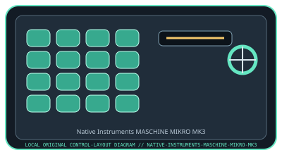

[ SPECIALIZED INPUT CONTROLLERS // IDENTIFIED COMPONENT ]
Native Instruments MASCHINE MIKRO MK3
USB-powered pad controller for beat production and performance with the MASCHINE software environment.

MODEL IDENTIFICATION: MASCHINE MIKRO MK3. Confirm the full label, revision, region, included accessories, and software generation against the physical unit before use.
Model specifications
| Catalog leaf | Specialized input controllers |
|---|---|
| Exact model / identifier | MASCHINE MIKRO MK3 (NI product number: 25250; verify unit label) |
| Control inputs / sensors | 16 velocity-sensitive RGB pads, touch strip, four-directional push encoder, display, and dedicated mode, transport, and function buttons. Pad velocity and touch position are performance inputs; the controller is not an audio interface. |
| Connection / protocol | USB 2.0 Type-B connection and bus power; USB control/MIDI communication with the MASCHINE host software. It requires a computer and compatible MASCHINE software for its primary workflow. |
| Driver, software, and host compatibility | Native Instruments Native Access installs/registers MASCHINE software and device content. The controller can send MIDI in supported workflows, but full browser, sequencer, and performance integration depends on MASCHINE software. Verify currently supported Windows/macOS versions in NI’s compatibility documentation. |
| Setup / calibration | Install Native Access and a supported MASCHINE software version, connect USB, and complete device registration. Select the controller in MASCHINE, then test pad velocity, touch strip, and encoder. Use documented software preferences for pad sensitivity; do not assume pressure calibration. Confirm OS and USB hub support before a live session. |
Safety and preservation
Avoid liquids, impact, and concentrated pressure on pads or touch strip. Disconnect USB before cleaning with a dry cloth; do not open the enclosure or pull the connector at an angle. Preserve license/account and factory-reset information separately from the hardware.
Record observed condition, host OS, application/driver version, firmware, accessories, and test conditions separately from manufacturer claims.
Primary manufacturer sources
- Native Instruments MASCHINE MIKRO product pageManufacturer product specifications and software workflow.
- Native Instruments MASCHINE support and documentationManufacturer setup, manuals, software support, and compatibility information for MASCHINE hardware/software.
Specifications and software support can change by revision and host OS. Verify the exact unit and applicable manual before service or deployment.